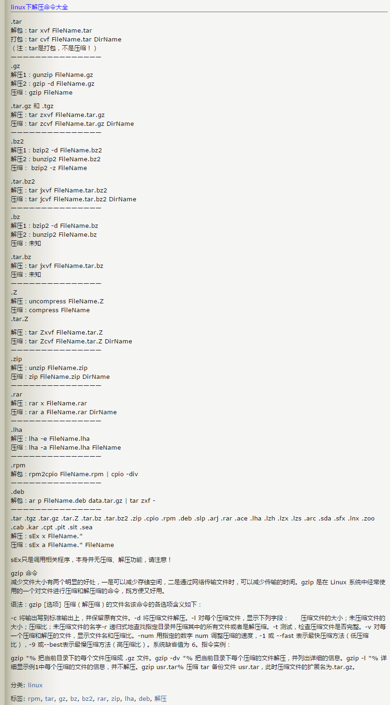

本文题目应该是“Linux 操作系统”，只因寡人平时都是使用 Debian，所以 Title 就是“Debian GNU/Linux”）。以下就是我从开始接触 Linux 到现在的一些使用笔记。
写在前面
我的 Linux 之路
a.第一次接触 Linux 是由于大二上学期的 Linux 基础课，但是，我并没有喜欢上这个系统，因为关于 Linux 的一切，对我来说都是陌生的，我在想我既然已经对 Windows 操作系统，又何必去瞎折腾呢，况且 Windows 可以完成 Linux 上的所有事情（后来，我发现我错了）；另一方面，可能是由于授课老师的坚毅个性，让我不想再去学习它，尽管当时我自己是多么幼稚，多么可笑。 b.后来，当我在听说 Linux 用来当服务器使用很好的时候，我开始尝试使用它来完成一些工作的时候，开始我有点喜欢 Linux 操作系统，不断的尝试（学习）使用 Linux，发现使用 Linux 来完成编程开发越来越完美了。 c.再后来，就是现在了，能使用它搭建一些服务，使我的生活更加方便，并将一些网站之类的放在上面，下面就是平时使用 Linux 的总结，仅供参考！ d.尽管工作的大部分时间都在用 Windows 操作系统，但是对 Linux 系列的折腾从未停止过。 #2017-03-09,更新中……
那些年用过的 Linux 操作系统
1.Ubuntu 12.04/14.04/16.04; 2.CentOS 6.0/7.0; 3.RedHat 7; 4.Debian 7/8/9; 5.SUSE Linux Enterprise server 11/12;
英文太差，能学好 Linux 吗？
原文地址：http://cs2.swfu.edu.cn/~wx672/lecture_notes/linux/en.html
原文内容： 首先，从日常应用的角度来讲，Linux 和 Windows 并没有什么不同，他们都有很好的中文支持。但作为计科系的学生，我们不能只是站在应用的层面上，用它来上上网，写写报告，看看电影，听听音乐……还应该把它当做一个强大的学习和开发工具来利用。 讲到学习，对于很多同学来说，英文就成了一个大问题，同时也是一个不能回避的问题。从某种程度上讲，学英文比学 Linux 更有用。因为你毕业以后很可能根本用不到 Linux，甚至可能根本用不到电脑，但我相信你肯定用得到英文。英文是你与世界交流的必要手段。 我们把文盲叫做睁眼瞎，那么在全球化的今天，英文盲实在是个睁眼半瞎。IT 领域的几乎一切技术（除了算盘）都是西方发明的，英文也是一切现行 IT 技术标准（ISO, RFC, ITU, IEEE…）的通用语言。在我们每天使用的键盘上，也看不到任何一个中文字符。在这种现实条件下，如果想扩展视野，想了解掌握新技术，想在IT行业有所发展，没有良好的英文水平是根本不可能的。 GNU/Linux 也是以西方为主流的技术，Linux 方面的英文材料远多于中文材料，而且质量远高于中文材料。所以说，要学好 Linux，必须要有比较好的英文阅读能力。 诸位花钱进学校就是要来学习的。而学习本身就是顽强不懈、克服困难的过程。既然知道自己的英文差，那么当然应该努力提高它，克服它。其实，大家可以通过学习 Linux 来提高自己的英文能力。提高了英文能力，反过来又大大有助于 Linux 学习。 学英文比学 Linux 更容易，因为它不需要你聪明，只需要你有足够的耐心。 如何提高英文？ 学英文，当然可以如辜鴻銘那般背诵《莎士比亚全集》。但我们学IT的，以娴熟阅读技术资料为目的，那就可以比辜老前辈少花些力气。但无论如何，掌握一门新语言基本上还是个力气活，天天用，天天读，实是不二法门。 使用英文桌面环境 遇到问题时，尽量查阅 Linux 英文参考资料，比如： Man pages Wikipedia Tutorials 定期，最好是每天，读一些英文文献，比如： IT业者必读的 RFC RFC1180, RFC791，… Ubuntu 社区杂志 看英文文章的时候，遇到生词，马上查出它的意思，我推荐你用 Google dictionary, 它有 Firefox 和 Chrome 浏览器的插件，非常方便，非常快。知道这个生词是什么意思了，就把这个词记到一张纸上。然后继续看文章，再遇到生词，再查，再记录。这样一篇文章看完，你的纸上页记了不少生词，晚上睡觉前，把纸上的词都过一遍，回忆一下它们的意思，就行了，简单吧？日积月累，水滴石穿，不出三五个月，你就不再惧怕英文了。 Linux 学习步骤 先熟练掌握命令行的基本操作 尝试安装。我推荐 Ubuntu 掌握简单系统管理操作 了解并适应经典开发环境 vim, emacs GCC, GDB, make git 了解一些可视化开发环境，比如 eclipse, netbeans, Qt4designer, … 了解 LAMP 开发环境 了解其它常用工具 系统管理工具 网络管理工具 日常工作工具 娱乐
Get Started
GNU's Not Unix!
Wifi连接配置（configure）
1.查看无线（wireless）网卡（LAN）驱动（driver） # lsmod | grep iw 2.安装（Installing）无线网卡驱动 # apt-get install firmware-iwlwifi wireless-tools 3.向内核（kernel）中加载/移除模块（modules） # modprobe iwl4965 4.重启系统 # reboot 5.配置无线网络 //查看无线网口（nerwork port） # iwconfig //开启无线网口 # ifconfig wlan0 up //扫描（scaning）无线网络 # iwlist wlan0 scan //连接无线网络 # iwconfig wlan0 ESSID "wifi-name" KEY "password" open //执行上面的命令（command）后，发现并不能成功！！！ //于是，通过如下命令继续配置 //格式：wpa_passphrase <ssid> [passphrase] # wpa_passphrase "wifi-name" "passowrd">/etc/wpa_supplicant.conf # wpa_passphrase -B -i wlan0 -Dwext -c /etc/wpa_supplicant.conf //查看wlan0无线网口 # iwconfig wlan0 //执行命令获取到IP地址，成功连上WiFi # dhclient wlan0 6.开机自动连接WiFi配置 # vim /etc/network/interfaces.d/wlan0
auto wlan0 allow-hotplug wlan0 iface wlan0 inet dhcp wpa-conf /etc/wpa_supplicant.conf
配置安装源(source)
//配置163源：访问http://mirrors.163.com，找到镜像名为debian的目录，点击debian使用帮助，根据最新的debian版本进行选择jessie，wheezy，squeeze。从最新版本到最低版本选择 $ vim /etc/apt/source.list //以Jessie为例, 编辑/etc/apt/sources.list文件, 在文件最前面添加以下条目(操作前请做好相应备份)
deb http://mirrors.163.com/debian/ jessie main non-free contrib deb http://mirrors.163.com/debian/ jessie-updates main non-free contrib deb http://mirrors.163.com/debian/ jessie-backports main non-free contrib deb-src http://mirrors.163.com/debian/ jessie main non-free contrib deb-src http://mirrors.163.com/debian/ jessie-updates main non-free contrib deb-src http://mirrors.163.com/debian/ jessie-backports main non-free contrib deb http://mirrors.163.com/debian-security/ jessie/updates main non-free contrib deb-src http://mirrors.163.com/debian-security/ jessie/updates main non-free contrib
配置系统支持中文（support chinese）
安装及配置
//先安装locales $ sudo aptitude install locales //配置命令 $ sudo dpkg-reconfigure locales //选择编码（encode），space选择 en_US.UTF-8 zh_CN.GB2312 zh_CN.GB18030 zh_CN.GBK zh_CN.UTF-8 //文件配置 $ sudo vim /etc/default/locate
参考资料
https://wiki.debian.org/Locale
中文输入法
安装ibus
1.Run(as root) # aptitude install ibus-table-array30 ibus-qt4 ibus-gtk 2.Run(as a user) $ ibus-setup 3.Add export GTK_IM_MODULE=ibus export XMODIFIERS=@im=ibus export QT_IM_MODULE=ibus 4.auto-start the ibus daemon on every login $ echo "ibus-daemon -d -x -r -n kde" > $HOME/.kde/Autostart/ibus-daemon-autostart.sh && chmod +x $HOME/.kde/Autostart/ibus-daemon-autostart.sh 5.relogin 6.default:Ctrl+Space link：https://wiki.debian.org/I18n/ibus link2: https://wiki.debian.org/gnome-chinese-input
安装UIM
安装SCIM
安装fcitx
//1.安装fcitx及其他组件（module） $ sudo apt-get install fcitx fcitx-bin fcitx-config-common fcitx-config-gtk fcitx-data fcitx-frontend-all fcitx-googlepinyin fcitx-libs fcitx-module-x11 fcitx-modules fcitx-pinyin fcitx-table fcitx-ui-classic //2.运行及安装 UI 支持组件 $ export LANG=zh_CN.utf8 $ export LC_CTYPE=zh_CN.utf8 $ export LC_ALL=zh_CN.utf8 $ export XMODIFIERS=@im=fcitx $ fcitx & //Fcitx输入法调用前端需要有 ui 动态库的支持: # aptitude install fcitx-frontend-gtk2 fcitx-frontend-gtk3 fcitx-ui-classic //然后，重启可用。
参考资料
https://wiki.debian.org/gnome-chinese-input http://www.2cto.com/os/201311/255343.html
GNOME
显示最大化（maximize）和最小化（minimize）图标
执行命令 gnome-tweak-tool $ gnome-tweaks or $ gnome-tweak-tool
设置快捷键
//Gnome-Terminal 系统设置》键盘，输入名称，命令：gnome-terminal，快捷键：Super+T //文件管理器（Nautilus） 命令：nautilus，快捷键：Super+e //chrome 命令：google-chrome，快捷键：Super+c
改变显示屏亮度
# echo 300 >/sys/class/backlight/intel_backlight/brightness
Chrome安装FlashPlayer
# update-flashplugin-nonfree --install
Linux 入门
Linux 系统
Linux 可划分为以下四部分
1.Linux 内核 2.GNU 工具 3.图形化桌面环境 4.应用软件
深入探究 Linux 内核
Linus Torvalds：Linux 内核开发者。
Linux 内核主要负责一下四种功能： 1.系统内存管理 2.软件程序管理 3.硬件设备管理 4.文件系统管理
- 系统内存管理
内核不仅管理服务器上的可用物理内存，还可以创建和管理虚拟内存。
内核通过硬盘上的存储空间来实现虚拟内存，这块区域称为交换空间（swap space）。内核不断地交换空间和实际的物理内存之间反复交换虚拟内存中的内容。这使得系统以为它拥有比物理内存更多的可用内存。
内存存储单元按组划分成很多块，这些块称作页面（page）。内核将每个内存页面放在物理内存或交换空间。然后，内核会维护一个内存页面表，指明哪些页面位于物理内存内，哪些页面被换到了磁盘上。
内核会记录哪些内存页面正在使用中，并自动把一段时间未访问的内存页面复制到交换空间区域（称为换出，swapping out）——即使还有可用内存。
- 软件程序管理
Linux 操作系统将运行中的程序称为进程。内核控制着 Linux 系统如何管理运行在系统上的所有进程。
内核创建了第一个进程（称为 init 进程）来启动系统上所有其他进程。Linux 操作系统的 init 系统采用了运行级。Linux 操作系统有 5个启动运行级。 运行级为 1 时，只启动基本的系统进程以及一个控制台终端进程，我们称之为单用户模式。单用户模式通常用来在系统有问题时进行紧急的文件系统维护。显然，这种模式下，仅有一个人（通常是系统管理员）能登录到系统上操作数据。 运行级为 3 时，大多数应用软件，比如网络支持程序，都会启动。 运行级为 5 时，系统会启动 X Window 系统，允许用户通过图形化桌面窗口登录系统。 Linux 系统可以通过调整启动运行级来控制整个系统的功能。
- 硬件设备管理
内核的另一职责是管理硬件设备。任何 Linux 系统需要与之通信的设备，都需要在内核代码中加入驱动程序代码。在 Linux 内核中有两种方法用于插入设备驱动程序代码： 1.编译进内核的设备驱动代码 2.可插入内核的设备驱动模块 以前，插入设备驱动代码的唯一途径是重新编译内核。随着 Linux 内核支持的硬件设备越来越多，这个过程变得越来越低效。 后来，开发人员提出了内核模块的概念。它允许将驱动代码插入到运行中的内核而无需重新编译内核。Linux 系统将硬件设备当成特殊的文件，称为设备文件。设备文件有3种分类： 1.字符型设备文件：指处理数据时每次只能处理一个字符的设备。大多数类型的调制解调器和终端都是作为字符型设备文件创建的。 2.块设备文件：指处理数据时每次能处理大块大数据的设备，比如硬盘。 3.网络设备文件：指采用数据包发送和接受数据的设备，包括各种网卡和一个特殊的回环设备。这个回环设备允许 Linux 系统使用常见的网络编程协议同自身通讯。
Linux 为系统上的每个设备都创建一种称为节点的特殊文件。与设备的所有通信都通过设备节点完成。 每个节点都有唯一的数值对供 Linux 内核标识它。数值对包括一个主设备号和一个次设备号。类似的设备被划分到同样的主设备号下。次设备号用于标识主设备组下的某个特定设备。
- 文件系统管理
Linux 内核支持通过不同类型的文件系统从硬盘中读写数据。内核必须在编译时就加入对所有可能用到的文件系统的支持。下表是 Linux 系统用来读写数据的标准文件系统
文件系统 描述 ext Linux 扩展文件系统，最早的 Linux 文件系统 ext2 第二扩展文件系统，在ext的基础上提供更多的功能 ext3 第三扩展文件系统，支持日志功能 ext4 第四扩展文件系统，支持高级日志功能 hpfs OS/2高性能文件系统 jfs IBM日志文件系统 iso9660 ISO 9660文件系统（CD-ROM） mimix MINIX文件系统 msdos 微软的FAT16 ncp Netware文件系统 nfs 网络文件系统 ntfs 支持Microsoft NT文件系统 proc 访问系统信息 ReiserFS 高级Linux文件系统，能提供更好的性能和硬盘恢复功能 smb 支持网络访问的Samba SMB文件系统 sysv 较早期的Unix文件系统 ufs BSD文件系统 umsdos 建立在msdos上的类Unix文件系统 vfat Windows95文件系统（FAT32） XFS 高性能64位日志文件系统 Linux 内核采用虚拟文件系统（Virtual File System,VFS）作为和每个文件系统交互的接口。
GNU工具
Linux 桌面环境
Linux 发行版
入门第一步，理解 Linux
1.首先，以 Linux 的思维方式系统性思考问题。 2.Linux 是一个面向文件的操作系统。所有的应用、管理是基于文件的。 3.Linux 是一个以命令行为主要的管理方式的 OS。 4.Linux 的日志非常完善，也至关重要。 5.Linux 是一个以配置文件为管理基础的 OS。 6.Linux 的所有应用、管理和配置，都有很多程序来辅助完成。
获取帮助 & 问题解决
1.出现问题，先保护现场。（问题一种是已正确运行的系统出问题，另一种是新的操作或配置造成了问题） 2.当怀疑有黑客入侵或病毒的情况，马上做日志备份。 3.检查相关日志。 4.对于新的操作或配置造成的问题，最好是养成定期备份重要文件的习惯。 5.使用网络 6.使用搜索命令：find，locate，whereis。。。
Linux 常用命令
ls (list files and directories) less (view text files) file (classify a file's contents) cp - copy files and directories mv - move or rename files and directories rm - remove files and directories mkdir - create directories type - Display information about command type which - Locate a command help - Display reference page for shell builtin man - Display an on-line command reference chmod - modify file access rights su - temporarily become the superuser sudo - temporarily become the superuser chown - change file ownership chgrp - change a file's group ownership ps - list the processes running on the system kill - send a signal to one or more processes (usually to "kill" a process) jobs - an alternate way of listing your own processes bg - put a process in the background fg - put a process in the forground
Linux 网络配置
基本的网络参数
IP地址 子网掩码 网关 DNS
安装网络工具
//Debian/Linux $ sudo apt-get install net-tools
配置网络
1.在 Linux 中，以太网接口被命名为：eth0、eth1等。 2.lspci 命令可以查看网卡硬件信息（如果是 usb 网卡，则需要使用 lsusb 命令） 3.ifconfig 命令：查看接口信息 $ ifconfig -a $ ifconfig eth0 4.ifup,ifdown 命令：启用、禁用一个接口 $ ifup eth0 $ ifdown eth0
相关配置文件
1.网卡配置文件：/etc/sysconfig/network-scripts/ifcfg-eth0 2.DNS 配置文件：/etc/resolv.conf 3.主机名配置文件：/etc/sysconfig/network 4.静态主机名配置文件：/etc/hosts
网络测试
1.测试网路连通性：ping 命令 2.测试DNS解析：host,dig 命令 3.显示路由表：ip route 命令 4.追踪到达目标地址的网络路径：traceroute 命令 5.mtr 命令进行网络质量测试
日期时间设置
Linux 时钟分为系统时钟（System Clock）和硬件时钟（Real Time Clock，简称 RTC）。系统时钟指当前 Linux Kernel 中 的时钟;硬件时钟指主板上由电池供电的时钟，可在 BIOS 中进行设置。 1.date 命令 2.hwclock 命令，查看硬件时间 //设置硬件时间 $ sudo hwclock -set -date='07/17/2017 20:00' 3.硬件时间与系统时钟同步 $ sudo hwclock --hctosys(hc 代表硬件时间，sys 代表系统时间) $ sudo hwclock -systohc
Linux 目录结构

Linux 进阶篇
crontab 定时执行任务
对于 Linux 用户
你肯定希望：
每一天早上 8:00 钟，让电脑连接上音响，并播放音乐来唤你起床；
而中午 12:00 希望 Linux 可以发一封信到你的邮件信箱，提醒你可以去吃午餐了；
另外，在每年你爱人生日的前一天，先发封信提醒你，以免忘记这么重要的一天。
crontab 简单介绍
crontab 命令的功能是在一定的时间间隔调度一些命令的执行。 1./etc/crontab 文件 在 /etc 目录下有一个 crontab 文件，这里存放有系统运行的一些调度程序。每个用户可以建立自己的调度 crontab(在 /var/spool/cron 目录下)。 cron 服务每分钟不仅要读一次 /var/spool/cron 内的所有文件，还需要读一次 /etc/crontab，因此我们配置这个文件也能运用 cron 服务做一些事情。 用 crontab 配置是针对某个用户的，而编辑 /etc/crontab 是针对系统的任务。 2.crontab 文件格式如下：
SHELL=/bin/bash PATH=/sbin:/bin:/usr/sbin:/usr/bin MAILTO=root #如果出现错误，或者有数据输出，数据作为邮件发给这个帐号 HOME=/ #使用者运行的路径,这里是根目录 # run-parts
注意到"run-parts"这个参数，后面可以写要运行的某个脚本。 另外： /usr/lib/cron/cron.allow 表示谁能使用 crontab 命令。如果它是一个空文件表明没有一个用户能安排作业。如果这个文件不存在，而有另外一个文件。 /usr/lib/cron/cron.deny,则只有不包括在这个文件中的用户才可以使用 crontab 命令。如果它是一个空文件表明任何用户都可安排作业。两个文件同时存在时，cron.allow 优先，如果都不存在，只有超级用户可以安排作业。
crontab 基本格式
| \ | * | * | * | * | * | commond |
|---|---|---|---|---|---|---|
| 代表意思 | 分 | 时 | 日 | 月 | 周 | |
| 范 围 | (0-59) | (0-23) | (1-31) | (1-12) | (0-6) |
“ * ”表示任意时刻 “ , ”表示分割 “ - ”表示一个段 “ /n ”表示每 n 的单位执行一次
命令后面加上 >/dev/null 2>&1 ,标准错误重定向到标准输出
实例1：实现两个周备份一次 /var/ftp 目录下的内容
具体实现方法如下:
a.先新建一个 txt 文件，这里是 ftp-back-shell.txt，文件内容：
* * 14 * * cd /back/ftp-back/ && rsync -avzc /var/ftp ./
b.将 ftp-back.txt 文件放到 /opt/ftp-back/ 目录下
c.运行：
$ crontab /opt/ftp-back/ftp-back.txt
$ crontab -l
d.需要进行重启，配置文件生效： sudo systemctl restart crond.service
实例2：实现定时插入数据
1.新建 crontab.sh 脚本文件 $ vim crontab.sh
#!/bin/sh /usr/bin/php /home/zrg/.crontab/crontab.php
2.编辑 php 文件 3.设置定时任务 $ crontab -e */2 * * * * /bin/bash /home/zrg/.crontab/crontab.sh 4.查看定时任务 $ crontab -l 重启服务使生效：sudo systemctl restart cron.service 5.移除定时服务 $ crontab -r
示例3：备份 mysql 数据
$ vim cron.sh
#!/bin/sh filename=`date +%Y%m%d%H%M%S` mysqldump -u root -proot testdb>/home/zrg/crontab/$filename.sql
$ crontab -e 0 2 * * * /bin/bash /home/zrg/crontab/cron.sh $rccron reload
一些简单示例
43 21 * * * 21:43 执行 0 17 * * 1 每周一的 17:00 执行 0,10 17 * * 0,2,3 每周日,周二,周三的 17:00和 17:10 执行 0-10 17 1 * * 毎月1日从 17:00到17:10 毎隔1分钟 执行 */10 * * * * 每隔10分 执行 0,10,20,30,40,50 * * * * 每隔10分 执行 2 8-20/3 * * * 8:02,11:02,14:02,17:02,20:02 执行
解压命令大全

另外还有不常见的，但时有遇到的： .tar.xz $ tar xpvf file.tar.xz .tgz $ tar zxf name.tgz //解压到指定目录 $ tar zxvf name.tar.gz -C ./dir $ unzip name.zip -d ./dir
alias 命令的使用
//利用别名代替长命令 $ vim ~/.bashrc //存在这样的三行代码，意思就是检查是否存在 .bash_aliases 文件，存在就加载
if [ -f ~/.bash_aliases ]; then . ~/.bash_aliases fi
//于是,新建并编辑 $ vim .bash_aliases
# shadowsocks
alias shadowsocks="sudo sslocal -c /etc/shadowsocks.json -d start"
实用的 find 命令示例
用文件名查找文件
$ find -name "MyCProgram.c"
//忽略大小写 $ find -iname "MyCProgram.c"
// 在 root 目录及其子目录下查找 passwd 文件。 $ find -maxdepth 2 -name passwd // 在 root 目录下及其最大两层深度的子目录中查找 passwd 文件. (例如 root — level 1, and two sub-directories — level 2 and 3 ) $ find / -maxdepth 3 -name passwd // 在第二层子目录和第四层子目录之间查找 passwd 文件。 $ find -mindepth 3 -maxdepth 5 -name passwd
在 find 命令查找到的文件上执行命令
//下面的例子展示了 find 命令来计算所有不区分大小写的文件名为“MyCProgram.c”的文件的 MD5 验证和。{} 将会被当前文件名取代。
$ find -iname "MyCProgram.c" -exec md5sum {} \;
相反匹配
//显示所有的名字不是 MyCProgram.c 的文件或者目录。由于 maxdepth 是 1，所以只会显示当前目录下的文件和目录。 $ find -maxdepth 1 -not -iname "MyCProgram.c"
使用 inode 编号查找文件
//任何一个文件都有一个独一无二的 inode 编号，借此我们可以区分文件。创建两个名字相似的文件，例如一个有空格结尾，一个没有。 $ touch "test-file-name " [Note: There is a space at the end] $ ls -1 test* test-file-name test-file-name //从 ls 的输出不能区分哪个文件有空格结尾。使用选项 -i，可以看到文件的 inode 编号，借此可以区分这两个文件。 $ ls -i1 test* 16187429 test-file-name 16187430 test-file-name
//若你想执行“rm file?.txt”，下面所示的所有三个文件都会被删除。所以，采用下面的步骤来删除"file?.txt"文件。
//找到每一个文件的 inode 编号。
$ ls -i1
804178 file1.txt
804179 file2.txt
804180 file?.txt
//如下所示： 使用 inode 编号来删除那些具有特殊符号的文件名。
$ find -inum 804180 -exec rm {} \;
$ ls
file1.txt file2.txt
[Note: The file with name "file?.txt" is now removed]
根据文件权限查找文件
//找到具有组读权限的文件。使用下面的命令来找到当前目录下对同组用户具有读权限的文件，忽略该文件的其他权限。
$ find . -perm -g=r -type f -exec ls -l {} \;
//找到对组用户具有只读权限的文件。
$find . -perm g=r -type f -exec ls -l {} \;
//找到对组用户具有只读权限的文件(使用八进制权限形式)。
$ find . -perm 040 -type f -exec ls -l {} \;
找到 home 目录及子目录下所有的空文件(0字节文件)
//下面命令的输出文件绝大多数都是锁定文件盒其他程序创建的 place hoders $ find ~ -empty //只列出你 home 目录里的空文件。 $ find . -maxdepth 1 -empty //只列出当年目录下的非隐藏空文件。 $ find . -maxdepth 1 -empty -not -name ".*"
查找 5个最大或最小的文件
//下面的命令列出当前目录及子目录下的 5个最大的文件。这会需要一点时间，取决于命令需要处理的文件数量。
$ find . -type f -exec ls -s {} \; | sort -n -r | head -5
//查找 5个最小的文件
$ find . -type f -exec ls -s {} \; | sort -n | head -5
//上面的命令中，很可能你看到的只是空文件(0字节文件)。如此，你可以使用下面的命令列出最小的文件，而不是 0字节文件。
$ find . -not -empty -type f -exec ls -s {} \; | sort -n | head -5
使用 -type 查找指定文件类型的文件
//只查找 socket 文件 $ find . -type s //查找所有的目录 $ find . -type d //查找所有的一般文件 $ find . -type f //查找所有的隐藏文件和目录 $ find . -type f -name ".*" $ find -type d -name ".*"
通过和其他文件比较修改时间查找文件
//显示在指定文件之后做出修改的文件。下面的 find 命令将显示所有的在 ordinary_file 之后创建修改的文件。 $ ls -lrt $ find -newer ordinary_file
通过文件大小查找文件
//使用 -size 选项可以通过文件大小查找文件。 //查找比指定文件大的文件 $ find ~ -size +100M
//给常用 find 操作取别名
//删除 c 程序产生的 core 文件。
alias rmc="find . -iname core -exec rm {} \;"
$ rmc
用 find 命令删除大型打包文件
//下面的命令删除大于 100M 的 *.zip 文件。
$ find / -type f -name *.zip -size +100M -exec rm -i {} \;"
nc 命令的使用
介绍
netcat是网络工具中的瑞士军刀，它能通过TCP和UDP在网络中读写数据。通过与其他工具结合和重定向。 netcat所做的就是在两台电脑之间建立链接并返回两个数据流。你能建立一个服务器，传输文件，与朋友聊天，传输流媒体或者用它作为其它协议的独立客户端。
安装
// Redhat/CentOS/Fedora $ yum install nc // Debian/Ubuntu $ sudo apt-get install netcat
常见使用
- 端口扫描
端口扫描经常被系统管理员和黑客用来发现在一些机器上开放的端口，帮助他们识别系统中的漏洞。 $ nc -z -v -n 172.31.100.7 21-25 可以运行在TCP或者UDP模式，默认是TCP，-u参数调整为udp. z 参数告诉netcat使用0 IO,连接成功后立即关闭连接， 不进行数据交换(谢谢@jxing 指点) v 参数指使用冗余选项（译者注：即详细输出） n 参数告诉netcat 不要使用DNS反向查询IP地址的域名 Banner是一个文本，Banner是一个你连接的服务发送给你的文本信息。 一旦你发现开放的端口，你可以容易的使用netcat 连接服务抓取他们的banner。 $ nc -v 172.31.100.7 21
- 聊天工具
// Server $ nc -l 1234 // Client $ nc 172.168.100.7 1234
- 文件传输
// Server > Client $ nc -l 1234 > file.txt $ nc 172.168.100.7 1234 <file.txt
- 目录传输
// Server > Client $ tar -cvf - dir_name | nc -l 1234 $ nc -n 172.168.100.7 1234 | tar -xvf - 这里在A服务器上，我们创建一个tar归档包并且通过-在控制台重定向它，然后使用管道，重定向给netcat，netcat可以通过网络发送它。 在客户端我们下载该压缩包通过netcat 管道然后打开文件。 如果想要节省带宽传输压缩包，我们可以使用bzip2或者其他工具压缩。 // Server $ tar -cvf – dir_name| bzip2 -z | nc -l 1234 // Client $ nc -n 172.31.100.7 1234 | bzip2 -d |tar -xvf -
- 加密网络传输数据
// Server $ nc localhost 1234 | mcrypt –flush –bare -F -q -d -m ecb > file.txt // Client $ mcrypt –flush –bare -F -q -m ecb < file.txt | nc -l 1234
- 流视频
// Server $ cat video.avi | nc -l 1234 从一个视频文件中读入并重定向输出到netcat客户端 // Client $ nc 172.31.100.7 1234 | mplayer -vo x11 -cache 3000 - 从socket中读入数据并重定向到mplayer。
- 克隆一个设备
已经安装配置一台Linux机器并且需要重复同样的操作对其他的机器，而你不想在重复配置一遍。 假如你的系统在磁盘/dev/sda上: // Server $ dd if=/dev/sda | nc -l 1234 // Client $ nc -n 172.31.100.7 1567 | dd of=/dev/sda dd是一个从磁盘读取原始数据的工具，我通过netcat服务器重定向它的输出流到其他机器并且写入到磁盘中，它会随着分区表拷贝所有的信息。 但是如果我们已经做过分区并且只需要克隆root分区，我们可以根据我们系统root分区的位置，更改sda 为sda1，sda2.等等。
参考资料
https://blog.csdn.net/zhangxiao93/article/details/52705642
利用 ssh 传输文件
scp 命令格式
scp [-12346BCpqrv] [-c cipher] [-F ssh_config] [-i identity_file]
[-l limit] [-o ssh_option] [-P port] [-S program]
[[user@]host1:]file1 ... [[user@]host2:]file2
查看更多内容：$ man scp
实际应用
1、从服务器上下载文件 scp username@servername:/path/filename /var/www/local_dir（本地目录） 示例：scp root@192.168.0.101:/var/www/test.txt 把 192.168.0.101 上的 /var/www/test.txt 的文件下载到 /var/www/local_dir（本地目录）
2、上传本地文件到服务器 scp /path/filename username@servername:/path 例如 scp /var/www/test.php root@192.168.0.101:/var/www/ 把本机 /var/www/ 目录下的 test.php 文件上传到 192.168.0.101 这台服务器上的 /var/www/ 目录中
3、从服务器下载整个目录 scp -r username@servername:/var/www/remote_dir/（远程目录） /var/www/local_dir（本地目录） 例如：scp -r root@192.168.0.101:/var/www/test /var/www/ 4、上传目录到服务器 scp -r local_dir username@servername:remote_dir 例如：scp -r test root@192.168.0.101:/var/www/ 把当前目录下的test目录上传到服务器的 /var/www/ 目录
GCC 的使用
简单编译
$ gcc test.c -o test 实质上，以上这条命令编译过程分为四个阶段进行的，即预处理（预编译，Preprocessing）、编译（Compilation）、汇编（Assembly）和连接（Linking）。
1.Preprocessing $ gcc -E test.c -o test.i 或 $ gcc -E test.c gcc 的 -E 选项，可以让编译器在预处理后停止，并输出预处理结果。在本例中，预处理结果就是将 stdio.h 文件中的内容插入到 test.c 中了。 2.Compilation $ gcc -S test.i -o test.s gcc 的 -S 选项，表示在程序编译期间，在生成汇编代码后，停止，-o 输出汇编代码文件。 3.Assembly $ gcc -c test.s -o test.o 对于上一小节中生成的汇编代码文件 test.s，gas 汇编器负责将其编译为目标文件 4.Linking gcc 连接器是 gas 提供的，负责将程序的目标文件与所需的所有附加的目标文件连接起来，最终生成可执行文件。附加的目标文件包括静态连接库和动态连接库。 对于上一小节中生成的 test.o，将其与 Ｃ 标准输入输出库进行连接，最终生成程序 test $ gcc test.o -o test
多个程序文件的编译
$ gcc test1.c test2.c -o test
检错
$ gcc -pedantic test.c -o test //警告信息 $ gcc -Wall test.c -p test //-Werror 选项，那么 GCC 会在所有产生警告的地方停止编译，迫使程序员对自己的代码进行修改 $ gcc -Werror test.c -o test
库文件连接
1.编译可执行文件。首先我们要进行编译 test.c 为目标文件，这个时候需要执行 $ gcc –c –I /usr/dev/mysql/include test.c –o test.o 2.链接。最后我们把所有目标文件链接成可执行文件: $ gcc –L /usr/dev/mysql/lib –lmysqlclient test.o –o test 3.强制链接时使用静态链接库。默认情况下， GCC 在链接时优先使用动态链接库，只有当动态链接库不存在时才考虑使用静态链接库，如果需要的话可以在编译时加上 -static 选项，强制使用静态链接库。 $ gcc –L /usr/dev/mysql/lib –static –lmysqlclient test.o –o test
其他
静态库链接时搜索路径顺序：
1. ld 会去找GCC命令中的参数 -L 2. 再找 gcc 的环境变量 LIBRARY_PATH 3. 再找内定目录 /lib /usr/lib /usr/local/lib 这是当初 compile gcc 时写在程序内的
动态链接时、执行时搜索路径顺序:
1. 编译目标代码时指定的动态库搜索路径 2. 环境变量 LD_LIBRARY_PATH 指定的动态库搜索路径 3. 配置文件 /etc/ld.so.conf 中指定的动态库搜索路径 4. 默认的动态库搜索路径 /lib 5. 默认的动态库搜索路径 /usr/lib
有关环境变量： LIBRARY_PATH 环境变量：指定程序静态链接库文件搜索路径 LD_LIBRARY_PATH 环境变量：指定程序动态链接库文件搜索路径
Reference
http://www.cnblogs.com/ggjucheng/archive/2011/12/14/2287738.html
top&htop（系统状态监视命令）
top

iftop（网络监视命令）
$ sudo apt-get install iftop
axel（下载命令）
官方地址: http://axel.alioth.debian.org/ 描述: 替换wget命令
分区
Linux上挂载NTFS格式文件系统
方案A（Scheme A）：使用linux-ntfs
1. $ wget http://prdownloads.sourceforge.net/linux-ntfs/kernel-module-ntfs-2.6.18-92.el5-2.1.27-0.rr.10.11.x86_64.rpm 2. # rpm -ivh kernel-module-ntfs-2.6.18-92.el5-2.1.27-0.rr.10.11.x86_64.rpm 3. 检查 ntfs 模块是否被加载进系统 $ /sbin/modprobe ntfs [没有输出则代表存在；否则（otherwise）将会有错误信息（error message）报出（report）] $ cat /proc/filesystems [ntfs应该出现在列表中] 4.查看NTFS系统的编号 /sbin/fdisk -l |grep NTFS 5. #mkdir -p /mnt/win_ntfs #mount -t ntfs /dev/sda1 /mnt/win_ntfs
方案B（Scheme B）：使用fuse和ntfs-3g
1. # wget http://downloads.sourceforge.net/project/fuse/fuse-2.X/2.7.4/fuse-2.7.4.tar.gz?use_mirror=ncu # wget http://www.ntfs-3g.org/ntfs-3g-2009.4.4.tgz 2. # tar -zxf fuse-2.7.4.tar.gz # ./configure --prefix=/usr/local/fuse-2.7.4 # make # make install
# tar -zxf ntfs-3g-2009.4.4.tgz # ./configure --prefix=/usr/local/ntfs-3 # make # make install 3. 检查fuse模块是否被加载进系统 $ /sbin/modprobe fuse [没有输出则代表存在；否则将会有错误信息报出] $ cat /proc/filesystems [fuse应该出现在列表中] 4. 查看NTFS系统的编号 $ /sbin/fdisk -l |grep NTFS 5. #mount ntfs-3g /dev/sda1 /mnt/win_ntfs
参考：http://blog.163.com/flybood@126/blog/static/41230911201062165035335/
自动挂载 NTFS 格式硬盘
- 安装 ntfs-3g
$ sudo apt-get install ntfs-3g
- 步骤1：编辑/etc/fstab
$ sudo vim /etc/fstab /dev/sdb1 /mnt/ntfs/ ntfs nls-utf8,umask-0222,uid-1000,gid-1000,ro 0 0 Notice: If /dev/sdb1 path will change due to system configuration, I recommend that you use the UUID (Universally Unique Identifier) of the partition. To find the UUID of /dev/sdb1, enter: 翻译：/dev/sdb1 路径会随着系统配置而改变，建议使用 UUID （通用唯一标识符），下面是查看 UUID 的命令。 $ sudo /sbin/blkid /dev/sda1 //Note down the UUID value and update /etc/fstab as follows: 翻译：记录下 UUID，更新 /etc/fstab 文件。
# syntax # UUID="YOUR-UID-HERE" /mnt/ntfs/ ntfs nls-utf8,umask-0222,uid-1000,gid-1000,ro 0 0 UUID="c2dbc0c5-a8fc-439e-aa93-51b0a61372e8" /mnt/ntfs/ ntfs nls-utf8,umask-0222,uid-1000,gid-1000,ro 0 0 # Owning entire file system UUID="c2dbc0c5-a8fc-439e-aa93-51b0a61372e8" /mnt/ntfs/ ntfs uid-1000,gid-1000 0 0
//保存关闭文件
- 步骤2：创建目录
$ sudo mkdir -p /mnt/ntfs
- 步骤3：测试（Test）可用性
$ sudo mount -a $ df -h $ cd /mnt/ntfs $ ls -l
- 步骤4：卸载NTFS分区
$ sudo umount /mnt/ntfs // or $ sudo umount /dev/sda1
- 注意错误信息：“Read-only file system”提示
$ mv 05Music/ /mnt/sda/sda2/ /bin/mv: inter-device move failed: '05Music/' to '/mnt/sda/sda2/05Music'; unable to remove target: Read-only file system //解决（Solving）：配置 /etc/fstab
- 参考资料
https://www.cyberciti.biz/faq/debian-ubuntu-linux-auto-mounting-windows-ntfs-file-system/ http://www.tuicool.com/articles/ZbENfie https://wiki.archlinux.org/index.php/NTFS-3G https://wiki.archlinux.org/index.php/Fstab_(%E7%AE%80%E4%BD%93%E4%B8%AD%E6%96%87) https://wiki.archlinux.org/index.php/NTFS-3G_(%E7%AE%80%E4%BD%93%E4%B8%AD%E6%96%87)
格式化分区命令
将 /dev/sda7 硬盘格式化为 ext3 格式。 mkfs -t ext3 -c /dev/sda7
Boot加载选项修改
#chmod +w /boot/grub/grub.cfg #vim /boot/grub/grub.cfg 注释不需要的加载项！
问题解决（Problem）
改变 Home 目录下的目录中文名称为英文
方法1
$ vim ~/.config/user-dirs.dirs
XDG_DESKTOP_DIR="$HOME/Desktop" XDG_DOWNLOAD_DIR="$HOME/Download" XDG_TEMPLATES_DIR="$HOME/Template" XDG_PUBLICSHARE_DIR="$HOME/Public" XDG_DOCUMENTS_DIR="$HOME/Document" XDG_MUSIC_DIR="$HOME/Music" XDG_PICTURES_DIR="$HOME/Picture" XDG_VIDEOS_DIR="$HOME/Video"
方法2
export LANG=en_US xdg-user-dirs-gtk-update
电脑没有声音
解决
//安装驱动软件 $ sudo apt-get install alsa-utils $ sudo apt-get install alsa-oos $ sudo apt-get install esound $ sudo apt-get install gnome-audio //检查声卡驱动 $ lspci |grep Audio //检查内核模块 $ lsmod |grep snd //检查系统音量 $ alsamixer //alsamixer是alsa驱动的一个插件,是一个命令行下的图形设置工具. //alsamixer命令，00表示音量正常，MM表示此声道静音。可以通过M键切换 //初始化声卡 $ sudo alsactl init
参考资料
https://blog.gtwang.org/linux/ubuntu-16-04-headphone-speakers-sound-problem/ http://blog.163.com/lixiangqiu_9202/blog/static/535750372012541358800/
不能在 Sublime 编辑器（Editor）中输入中文
1.下载（Download）
$ git clone https://github.com/lyfeyaj/sublime-text-imfix.git
2.配置（Configure）
$ cd ~/sublime-text-imfix $ sudo cp ./lib/libsublime-imfix.so /opt/sublime_text/ $ sudo cp ./src/subl /usr/bin/ $ LD_PRELOAD=./libsublime-imfix.so subl
3.新建Shell脚本
$ vim /home/zrg/sublime #!/bin/bash LD_PRELOAD=/opt/sublime_text/libsublime-imfix.so subl
参考资料
http://www.jianshu.com/p/bf05fb3a4709
解决系统不能支持加密算法：chacha20
$ sudo apt-get install m2crypto gcc -y $ wget -N --no-check-certificate https://download.libsodium.org/libsodium/releases/libsodium-1.0.8.tar.gz $ tar zxvf libsodium-1.0.8.tar.gz $ cd libsodium-1.0.8 $ ./configure $ sudo make && make install $ sudo echo "include ld.so.conf.d/*.conf">/etc/ld.so.conf $ sudo echo "/lib">>/etc/ld.so.conf $ sudo echo "/usr/lib64">>/etc/ld.so.conf $ sudo echo "/usr/local/lib">>/etc/ld.so.conf $ ldconfig
软件源配置不全，导致软件不能安装
//Error: Can't fix the error because you are asking some packages to stay the same, that is they break the dependencies between the packages. //翻译：无法修正错误,因为您要求某些软件包保持现状,就是它们破坏了软件包间的依赖关系 //解决：检查安装源，进行重新配置，必要时添加debian官方安装源 $ vim /etc/apt/sources.list $ sudo apt-get update
.deb 转换为 .rpm
下载及安装 alien
1.下载: $ wget https://packages.debian.org/unstable/source/alien
2.安装: $ tar xpvf alien_8.95.tar.xz $ cd alien-8.95 $ make && make install
转换(Conversion)
$ alien -r kuaipan4uk_2.0.0.5_amd64.deb
软件自启动脚本实例
实例：php-fpm 服务启动脚本
- $ sudo vim /etc/init.d/php-fpm
#!/bin/sh # DateTime:2017-03-09 # Author:zrg # chkconfig: - 84 16 . /etc/rc.d/init.d/functions # Source networking configuration. . /etc/sysconfig/network # Check that networking is up. [ "$NETWORKING" = "no" ] && exit 0 phpfpm="/usr/local/php/sbin/php-fpm" prog=$(basename ${phpfpm}) lockfile=/var/lock/subsys/phpfpm start() { [ -x ${phpfpm} ] || exit 5 echo -n $"Starting $prog: " daemon ${phpfpm} retval=$? echo [ $retval -eq 0 ] && touch $lockfile return $retval } stop() { echo -n $"Stopping $prog: " killproc $prog -QUIT retval=$? echo [ $retval -eq 0 ] && rm -f $lockfile return $retval } restart() { configtest || return $? stop start } reload() { configtest || return $? echo -n $"Reloading $prog: " killproc ${phpfpm} -HUP RETVAL=$? echo } force_reload() { restart } configtest() { ${phpfpm} -t } rh_status() { status $prog } rh_status_q() { rh_status >/dev/null 2>&1 } case "$1" in start) rh_status_q && exit 0 $1 ;; stop) rh_status_q || exit 0 $1 ;; restart|configtest) $1 ;; reload) rh_status_q || exit 7 $1 ;; status) rh_status ;; *) echo $"Usage: $0 {start|stop|status|restart|reload|configtest}" exit 2 esac
脚本说明： # Source function library. . /etc/rc.d/init.d/functions //类似于include,require，引入文件。 # Source networking configuration. . /etc/sysconfig/network //同理。 //引入后，用到的daemon、status NETWORKING=yes HOSTNAME=E10162 //将他们作为变量赋值,判断网卡是否启动，如果你的 nginx 不走网卡，其实网络这段可以去掉 //daemon便是实现上图漂亮的【 OK 】的函数.
2.设置自启动
# php-fpm 加入服务 chkconfig --add php-fpm # php-fpm 234 级别下设置为启动 chkconfig php-fpm on # 查看 php-fpm 服务当前配置 chkconfig --list php-fpm php-fpm 0:off 1:off 2:on 3:on 4:on 5:on 6:off
3.php-fpm操作
# 启动/关闭/重启/重载 service php-fpm start/stop/restart/reload # 检查配置文件 #service php-fpm configtest
References
http://www.ttlsa.com/php/php-fpm-service-scripts/